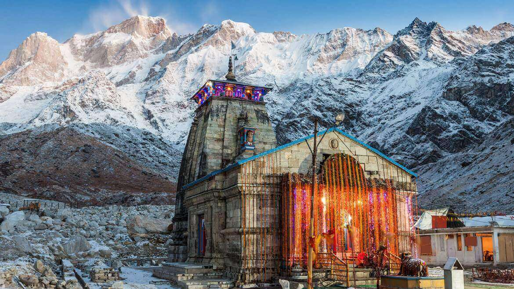
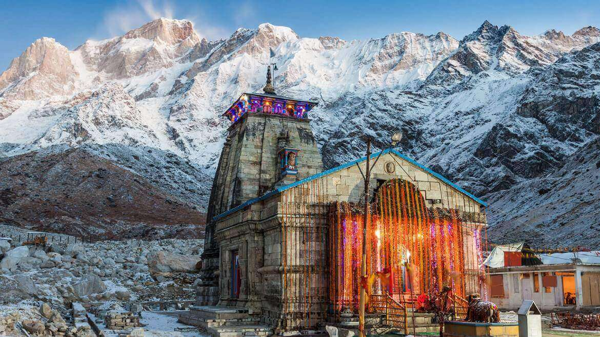
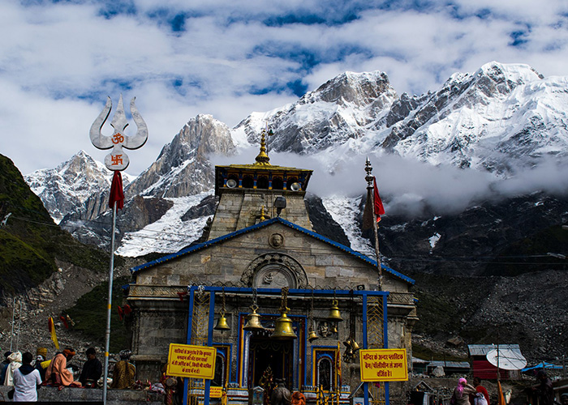
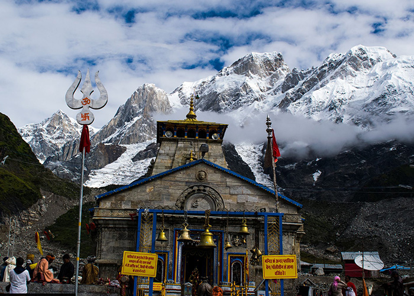
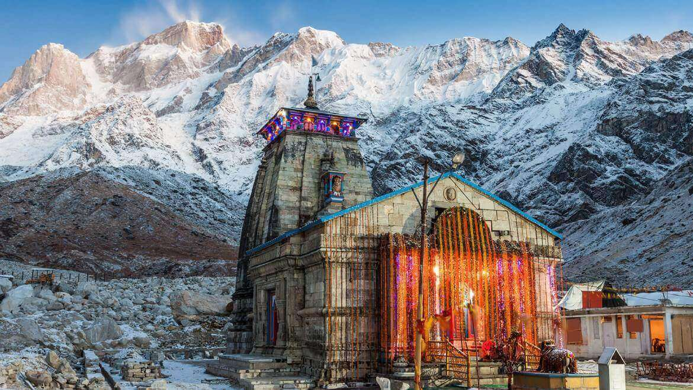
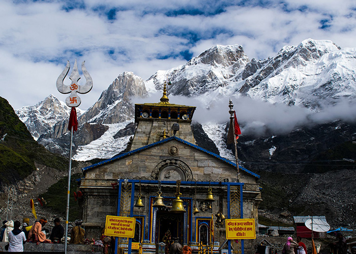

 

Kedarnath is a Hindu temple, one of the twelve jyotirlinga of Shiva. The temple is located on the Garhwal Himalayan range near the Mandakini river, in the state of Uttarakhand, India. Due to extreme weather conditions, the temple is open to the general public only between the months of April (Akshaya Tritiya) and November (Kartik Purnima, the autumn full moon). During the winters, the vigraha (deity) of the temple is carried down to Ukhimath to be worshipped for the next six months. Kedarnath is seen as a homogeneous form of Shiva, the 'Lord of Kedarkhand', the historical name of the region.

